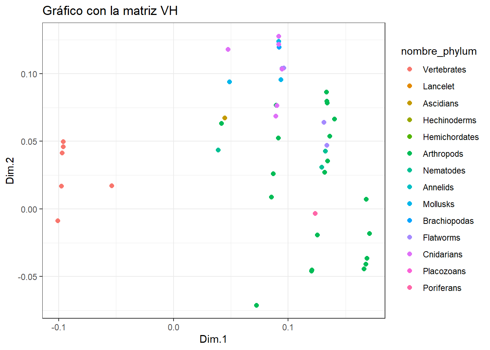
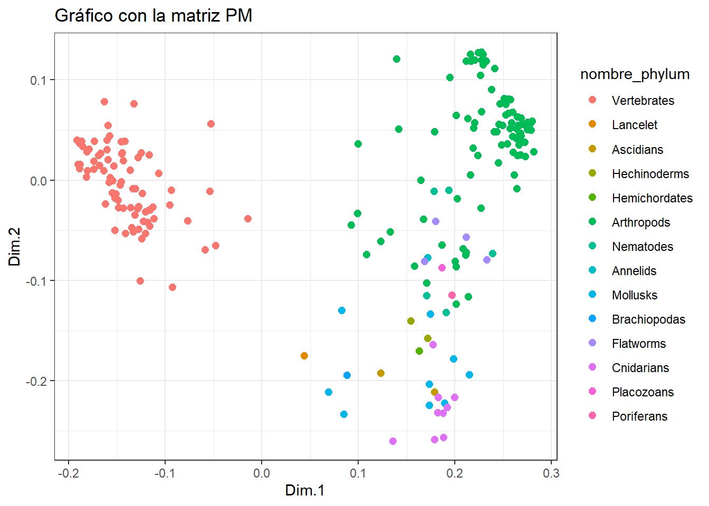
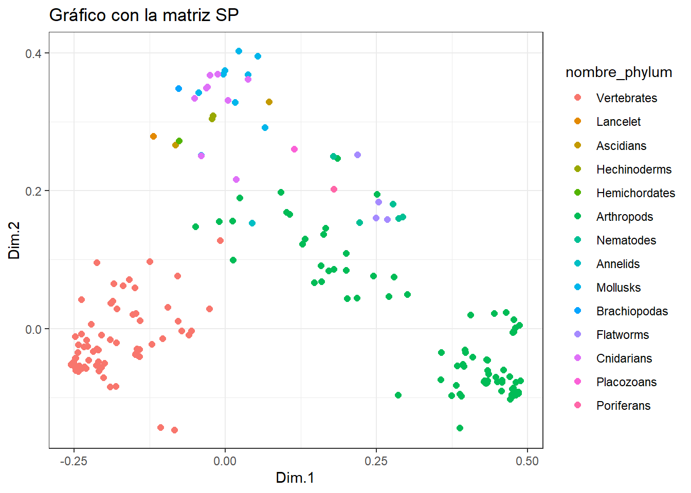

library(tidyverse)
library(ggplot2)
library(mds)
library(ggpubr)Entrega5 AD: MDS
El metabolismo se caracteriza por reacciones químicas vinculadas entre sí, creando una compleja estructura de red. Una representación simplificada del metabolismo, que denominamos red metabólica abstracta, es un grafo en el que las vías metabólicas son nodos y existe una arista entre dos nodos si sus correspondientes vías comparten uno o más compuestos.
Para explorar los potenciales y límites de una representación tan básica, hemos empleado tres tipos de kernels (distancias entre grafos):
VH (Vertex histogram): solo tiene en cuenta si las etiquetas de los nodos de los grafos que se comparan son iguales o no.
SP (Shortest-Path): compara los grafos en función de sus caminos más cortos. Intuitivamente, esto significa medir lo fácil o difícil que es conectar, a través de compuestos compartidos, parejas de caminos en los dos grafos.
PM (Pyramid Match): mide la similitud de las características topológicas (por ejemplo, la conectividad) de los nodos con la misma etiqueta en los dos grafos comparados.
La práctica consiste en representar gráficamente (con solo 2 coordenadas principales) las matrices de similitud generadas por cada kernel coloreando los puntos de acuerdo al grupo de animales de acuerdo a su phylum.
Datos
Cargamos las librerías
Cargamos las matrices de datos
lista_animales = read.table("fileListANIMAL_phylum.txt")
nombres = lista_animales[,1]
phylum = lista_animales[,2]
datos_VH = read.table("ANIMALS-matrixVH.txt")
colnames(datos_VH) = nombres
rownames(datos_VH) = nombres
datos_SP = read.table("ANIMALS-matrixSP.txt")
colnames(datos_SP) = nombres
rownames(datos_SP) = nombres
datos_PM = read.table("ANIMALS-matrixPM.txt")
colnames(datos_PM) = nombres
rownames(datos_PM) = nombres
names_phylum = read_table("names_phylum.txt", col_types = cols(numero = col_character(), phylum = col_factor()))
names_phylum$phylum[1][1] Vertebrates
14 Levels: Vertebrates Lancelet Ascidians Hechinoderms ... PoriferansVH (Vertex histogram)
Puesto que nos dan la matriz de similaridad, vamos a convertirla en una matatriz de distancias.
dist_VH <- sqrt(2*(1-datos_VH))Tenemos la lista de animales con su phylum y tres matrices de distancias o similitudes. Estas matrices son cuadradas de dimensión 370, que sería el número de observaciones del dataset original.
vh.mds<-cmdscale(dist_VH,k=2)Con el resultado del análisis de MDS, creamos el siguiente data frame añadiendo una nueva variable tipo factor que nos indique a que phylum pertenece (14 niveles).
tibble_vh.mds = as.tibble(vh.mds); tibble_vh.mdsWarning: `as.tibble()` was deprecated in tibble 2.0.0.
ℹ Please use `as_tibble()` instead.
ℹ The signature and semantics have changed, see `?as_tibble`.Warning: The `x` argument of `as_tibble.matrix()` must have unique column names if
`.name_repair` is omitted as of tibble 2.0.0.
ℹ Using compatibility `.name_repair`.
ℹ The deprecated feature was likely used in the tibble package.
Please report the issue at <https://github.com/tidyverse/tibble/issues>.# A tibble: 370 × 2
V1 V2
<dbl> <dbl>
1 -0.101 -0.00874
2 -0.101 -0.00874
3 -0.101 -0.00874
4 -0.101 -0.00874
5 -0.101 -0.00874
6 -0.101 -0.00874
7 -0.101 -0.00874
8 -0.101 -0.00874
9 -0.101 -0.00874
10 -0.101 -0.00874
# ℹ 360 more rowstibble_vh.mds = cbind(tibble_vh.mds, as.factor(phylum))
tibble_vh.mds <- tibble_vh.mds %>%
rename(X=V1, Y=V2, phylum = "as.factor(phylum)")
tibble_vh.mds = tibble_vh.mds %>% mutate(nombre = case_when(
phylum == 101 ~ names_phylum$phylum[1],
phylum == 102 ~ names_phylum$phylum[2],
phylum == 103 ~ names_phylum$phylum[3],
phylum == 104 ~ names_phylum$phylum[4],
phylum == 105 ~ names_phylum$phylum[5],
phylum == 106 ~ names_phylum$phylum[6],
phylum == 107 ~ names_phylum$phylum[7],
phylum == 108 ~ names_phylum$phylum[8],
phylum == 109 ~ names_phylum$phylum[9],
phylum == 110 ~ names_phylum$phylum[10],
phylum == 111 ~ names_phylum$phylum[11],
phylum == 112 ~ names_phylum$phylum[12],
phylum == 113 ~ names_phylum$phylum[13],
phylum == 114 ~ names_phylum$phylum[14]))
tibble_vh.mds %>% glimpse()Rows: 370
Columns: 4
$ X <dbl> -0.1007984, -0.1007984, -0.1007984, -0.1007984, -0.1007984, -0.…
$ Y <dbl> -0.008738438, -0.008738438, -0.008738438, -0.008738438, -0.0087…
$ phylum <fct> 101, 101, 101, 101, 101, 101, 101, 101, 101, 101, 101, 101, 101…
$ nombre <fct> Vertebrates, Vertebrates, Vertebrates, Vertebrates, Vertebrates…df_vh.mds = cbind(data.frame(vh.mds), as.factor(phylum))
colnames(df_vh.mds) = c("X", "Y", "phylum")
glimpse(df_vh.mds)Rows: 370
Columns: 3
$ X <dbl> -0.1007984, -0.1007984, -0.1007984, -0.1007984, -0.1007984, -0.…
$ Y <dbl> -0.008738438, -0.008738438, -0.008738438, -0.008738438, -0.0087…
$ phylum <fct> 101, 101, 101, 101, 101, 101, 101, 101, 101, 101, 101, 101, 101…p <- ggplot(tibble_vh.mds, aes(x = X, y = Y, color = nombre)) +
geom_point(size = 2.2) +
labs(title = "Gráfico con la matriz VH", x = "Dim.1", y = "Dim.2") +
theme(legend.position = "right") +
theme_bw()
# Mostrar el gráfico
print(p)
pp <- ggscatter(tibble_vh.mds, x = "X", y = "Y", color = "nombre") +
labs(title = "Gráfico con la matriz VH", x = "Dim.1", y = "Dim.2") +
theme(legend.position = "right") +
theme_bw()
print(pp)
Realicemos el mismo procedimiento para las otras dos matrices de similaridad.
SP (Shortest-Path)
Convertimos la matriz “ANIMALS-matrixSP” en una matriz de distancias.
dist_SP <- sqrt(2*(1-datos_SP))Tenemos la lista de animales con su phylum y tres matrices de distancias o similitudes. Estas matrices son cuadradas de dimensión 370, que sería el número de observaciones del dataset original.
sp.mds<-cmdscale(datos_SP,k=2)Con el resultado del análisis de MDS, creamos el siguiente data frame añadiendo una nueva variable tipo factor que nos indique a que phylum pertenece (14 niveles).
tibble_sp.mds = as.tibble(sp.mds); tibble_sp.mds# A tibble: 370 × 2
V1 V2
<dbl> <dbl>
1 -6.67e-9 0
2 -2.39e-8 -3.32e- 8
3 -1.11e-8 -4.89e- 9
4 -7.46e-9 3.87e-10
5 -1.45e-8 -6.50e- 9
6 -1.11e-8 -7.83e- 9
7 -1.23e-8 -6.72e- 9
8 -1.11e-8 -5.45e- 9
9 -7.46e-9 3.87e-10
10 -9.36e-9 -6.91e-10
# ℹ 360 more rowstibble_sp.mds = cbind(tibble_sp.mds, as.factor(phylum))
tibble_sp.mds <- tibble_sp.mds %>%
rename(X=V1, Y=V2, phylum = "as.factor(phylum)")
tibble_sp.mds = tibble_sp.mds %>% mutate(nombre = case_when(
phylum == 101 ~ names_phylum$phylum[1],
phylum == 102 ~ names_phylum$phylum[2],
phylum == 103 ~ names_phylum$phylum[3],
phylum == 104 ~ names_phylum$phylum[4],
phylum == 105 ~ names_phylum$phylum[5],
phylum == 106 ~ names_phylum$phylum[6],
phylum == 107 ~ names_phylum$phylum[7],
phylum == 108 ~ names_phylum$phylum[8],
phylum == 109 ~ names_phylum$phylum[9],
phylum == 110 ~ names_phylum$phylum[10],
phylum == 111 ~ names_phylum$phylum[11],
phylum == 112 ~ names_phylum$phylum[12],
phylum == 113 ~ names_phylum$phylum[13],
phylum == 114 ~ names_phylum$phylum[14]))
tibble_sp.mds %>% glimpse()Rows: 370
Columns: 4
$ X <dbl> -6.668366e-09, -2.391302e-08, -1.111064e-08, -7.464016e-09, -1.…
$ Y <dbl> 0.000000e+00, -3.317054e-08, -4.885800e-09, 3.869143e-10, -6.49…
$ phylum <fct> 101, 101, 101, 101, 101, 101, 101, 101, 101, 101, 101, 101, 101…
$ nombre <fct> Vertebrates, Vertebrates, Vertebrates, Vertebrates, Vertebrates…df_sp.mds = cbind(data.frame(sp.mds), as.factor(phylum))
colnames(df_sp.mds) = c("X", "Y", "phylum")
glimpse(df_sp.mds)Rows: 370
Columns: 3
$ X <dbl> -6.668366e-09, -2.391302e-08, -1.111064e-08, -7.464016e-09, -1.…
$ Y <dbl> 0.000000e+00, -3.317054e-08, -4.885800e-09, 3.869143e-10, -6.49…
$ phylum <fct> 101, 101, 101, 101, 101, 101, 101, 101, 101, 101, 101, 101, 101…df_sp.mds X Y phylum
hsa -6.668366e-09 0.000000e+00 101
ptr -2.391302e-08 -3.317054e-08 101
pps -1.111064e-08 -4.885800e-09 101
ggo -7.464016e-09 3.869143e-10 101
pon -1.453797e-08 -6.497383e-09 101
nle -1.106779e-08 -7.833302e-09 101
mcc -1.226025e-08 -6.718984e-09 101
mcf -1.105634e-08 -5.453263e-09 101
csab -7.464016e-09 3.869143e-10 101
caty -9.357706e-09 -6.911453e-10 101
panu -1.298980e-08 -6.225360e-09 101
rro -1.362742e-08 -4.667692e-09 101
rbb -1.329119e-08 -6.677588e-09 101
tfn -8.449998e-09 -4.200558e-09 101
pteh -7.464016e-09 3.869143e-10 101
cjc -7.464016e-09 3.869143e-10 101
sbq 2.616252e-09 6.797903e-09 101
mmur -8.797533e-09 5.995733e-10 101
mmu -1.488231e-08 5.240810e-10 101
mcal -1.111118e-08 1.632259e-09 101
mpah -1.027893e-08 7.509807e-10 101
rno -8.955858e-09 1.951640e-09 101
mcoc -7.818657e-09 1.362601e-09 101
mun -1.225999e-08 3.661692e-10 101
cge -6.951239e-09 8.975847e-10 101
pleu -1.069710e-08 1.925159e-10 101
ngi -1.171242e-08 1.311033e-09 101
hgl -7.125492e-09 4.543165e-10 101
ccan -1.051972e-08 2.392737e-10 101
ocu -7.464016e-09 3.869143e-10 101
opi -9.664798e-09 1.133249e-09 101
tup -9.223460e-09 8.720553e-10 101
cfa -7.464016e-09 3.869143e-10 101
vvp 9.445552e-09 -1.076493e-09 101
vlg -7.464016e-09 3.869143e-10 101
aml -7.464016e-09 3.869143e-10 101
umr -7.464016e-09 3.869143e-10 101
uah -6.416449e-09 2.268659e-09 101
oro -7.464016e-09 3.869143e-10 101
elk -6.475522e-09 2.310501e-09 101
mpuf -6.394225e-09 2.283068e-09 101
eju -8.472845e-09 4.326343e-10 101
mlx -5.838755e-09 2.306439e-09 101
fca -5.997161e-09 2.106212e-09 101
pyu -6.322360e-09 2.055573e-09 101
pbg -6.215065e-09 2.126139e-09 101
ptg -6.130348e-09 1.617257e-09 101
ppad -6.057732e-09 1.974032e-09 101
aju -6.393346e-09 1.970415e-09 101
hhv -5.874760e-09 1.703486e-09 101
bta -8.741358e-09 1.175344e-09 101
bom -5.615845e-09 1.977194e-09 101
biu -7.464016e-09 3.869143e-10 101
bbub -5.289336e-09 2.452268e-09 101
chx -7.464016e-09 3.869143e-10 101
oas -5.723876e-09 2.311972e-09 101
oda -5.641879e-09 2.700466e-09 101
ccad -5.668950e-09 2.372312e-09 101
ssc -7.971550e-09 7.552503e-10 101
cfr -3.856469e-09 8.190537e-10 101
cbai -5.322663e-09 2.367777e-09 101
cdk -5.396619e-09 2.555582e-09 101
bacu -5.056634e-09 2.725932e-09 101
lve -7.464016e-09 3.869143e-10 101
oor -5.163342e-09 2.728477e-09 101
dle -5.179843e-09 2.602656e-09 101
pcad -7.464016e-09 3.869143e-10 101
ecb -5.493235e-09 2.491214e-09 101
epz -5.666081e-09 2.502032e-09 101
eai -5.777049e-09 2.622847e-09 101
myb -7.464016e-09 3.869143e-10 101
myd -5.579552e-09 2.668755e-09 101
mmyo -7.228777e-09 1.014313e-10 101
mna -5.471352e-09 2.798755e-09 101
pkl -7.464016e-09 3.869143e-10 101
hai -5.304009e-09 2.607818e-09 101
dro -5.042449e-09 2.661702e-09 101
shon -7.464016e-09 3.869143e-10 101
ajm -7.464016e-09 3.869143e-10 101
pdic -5.095622e-09 2.726350e-09 101
mmf -4.983013e-09 2.524082e-09 101
rfq -7.464016e-09 3.869143e-10 101
pale -7.328579e-09 3.636191e-10 101
pgig -7.464016e-09 3.869143e-10 101
ray -7.599454e-09 4.102096e-10 101
mjv -6.182893e-09 2.583414e-10 101
tod -4.938889e-09 2.736639e-09 101
lav -7.576073e-09 1.216267e-09 101
tmu -4.871533e-09 2.874662e-09 101
mdo -7.464016e-09 3.869143e-10 101
gas -7.464016e-09 3.869143e-10 101
shr -7.464016e-09 3.869143e-10 101
pcw -4.573240e-09 2.793029e-09 101
oaa -7.464016e-09 3.869143e-10 101
gga -4.486212e-09 2.466818e-09 101
pcoc -7.339702e-09 1.275453e-09 101
mgp -4.447524e-09 2.618086e-09 101
cjo -4.591783e-09 2.886101e-09 101
nmel -5.928767e-09 9.586364e-10 101
apla -7.464016e-09 3.869143e-10 101
acyg -7.464016e-09 3.869143e-10 101
tgu -7.464016e-09 3.869143e-10 101
lsr -7.464016e-09 3.869143e-10 101
scan -7.464016e-09 3.869143e-10 101
pmoa -3.920009e-09 2.571919e-09 101
otc -4.190230e-09 2.447303e-09 101
pruf -4.160935e-09 2.512188e-09 101
gfr -7.847153e-09 2.268492e-10 101
fab -7.464016e-09 3.869143e-10 101
phi -4.245092e-09 2.443559e-09 101
pmaj -7.464016e-09 3.869143e-10 101
ccae -7.080880e-09 5.469794e-10 101
ccw -7.464016e-09 3.869143e-10 101
etl -7.105576e-09 8.932518e-10 101
fpg -7.580080e-09 4.088204e-10 101
fch -8.400900e-09 6.777564e-10 101
clv -6.941327e-09 -2.444462e-10 101
egz -7.464016e-09 3.869143e-10 101
nni -7.347953e-09 3.650082e-10 101
acun -7.464016e-09 3.869143e-10 101
padl -7.464016e-09 3.869143e-10 101
aam -7.464016e-09 3.869143e-10 101
arow -7.522625e-09 3.471346e-10 101
npd -7.464016e-09 3.869143e-10 101
dne -7.405408e-09 4.266940e-10 101
asn -3.111243e-09 1.990361e-09 101
amj -1.227125e-08 3.444902e-10 101
cpoo -7.464016e-09 3.869143e-10 101
ggn -7.464016e-09 3.869143e-10 101
pss -7.464016e-09 3.869143e-10 101
cmy -6.721621e-09 -1.488046e-09 101
cpic -2.993867e-09 5.057586e-10 101
tst -7.464016e-09 3.869143e-10 101
cabi -1.013468e-08 -3.360672e-10 101
acs -7.464016e-09 3.869143e-10 101
pvt -7.412131e-09 4.361111e-10 101
sund -7.150620e-09 3.836073e-10 101
pbi -7.438644e-09 4.541868e-10 101
pmur -1.471853e-08 -1.051049e-09 101
tsr -7.464016e-09 3.869143e-10 101
pgut -7.464016e-09 3.869143e-10 101
vko -7.854670e-09 2.737522e-10 101
pmua -1.498672e-08 -1.416501e-09 101
zvi -1.486939e-08 -1.276864e-09 101
gja -7.464016e-09 3.869143e-10 101
xla -7.093196e-09 3.618680e-10 101
xtr -7.464016e-09 3.869143e-10 101
npr -7.834837e-09 4.119607e-10 101
dre -7.464016e-09 3.869143e-10 101
srx -8.054468e-09 -8.984069e-11 101
sanh -8.093774e-09 4.565764e-11 101
sgh -7.847548e-09 4.513003e-10 101
ccar -7.464016e-09 3.869143e-10 101
caua -7.877432e-09 4.764355e-11 101
ipu -7.370678e-09 5.192532e-10 101
phyp -7.152671e-09 4.110840e-10 101
amex -7.464016e-09 3.869143e-10 101
eee -7.868700e-09 2.304058e-10 101
tru -6.852312e-09 3.997465e-10 101
tng -7.464016e-09 3.869143e-10 101
lco -7.464016e-09 3.869143e-10 101
ncc -7.464016e-09 3.869143e-10 101
cgob -7.464016e-09 3.869143e-10 101
ely -7.165629e-09 2.610565e-10 101
plep -7.464016e-09 3.869143e-10 101
sluc -6.901781e-09 2.337273e-10 101
ecra -6.991775e-09 1.571266e-10 101
pflv -6.803728e-09 1.820206e-10 101
gat -6.882779e-09 1.309444e-10 101
ppug -7.297796e-09 2.303722e-10 101
msam -6.236873e-09 4.772807e-10 101
cud -7.464016e-09 3.869143e-10 101
mze -6.902324e-09 1.465858e-10 101
onl -7.150389e-09 4.139522e-10 101
oau -6.681967e-09 4.711249e-10 101
ola -7.464016e-09 3.869143e-10 101
oml -7.305309e-09 3.692620e-10 101
xma -7.292834e-09 2.668239e-10 101
xco -7.426389e-09 3.553818e-10 101
xhe -7.410436e-09 3.023442e-10 101
pret -7.464016e-09 3.869143e-10 101
cvg -7.287698e-09 3.439067e-10 101
ctul -5.821273e-09 8.053798e-10 101
nfu -7.321002e-09 2.941623e-10 101
kmr -7.305514e-09 2.367707e-10 101
alim -7.270324e-09 2.074668e-10 101
aoce -7.464016e-09 3.869143e-10 101
csem -7.464016e-09 3.869143e-10 101
pov -7.414503e-09 5.322141e-10 101
ssen -7.780591e-09 5.787770e-10 101
lcf -7.612035e-09 2.373702e-10 101
sdu -7.745537e-09 7.731862e-10 101
slal -7.781009e-09 6.410045e-10 101
xgl -7.700629e-09 6.562390e-10 101
hcq -7.464016e-09 3.869143e-10 101
bpec -8.048192e-09 7.021699e-10 101
malb -7.952263e-09 6.603504e-10 101
sasa -7.909032e-09 3.848946e-10 101
otw -8.691159e-09 2.965480e-10 101
omy -7.838481e-09 6.543955e-10 101
salp -7.464016e-09 3.869143e-10 101
snh -7.828306e-09 8.385112e-10 101
els -7.687977e-09 6.305914e-10 101
sfm -7.704543e-09 6.442939e-10 101
pki -8.023300e-09 5.353618e-10 101
aang -8.661744e-09 -2.953138e-11 101
loc -7.464016e-09 3.869143e-10 101
pspa -7.430955e-09 3.785962e-10 101
arut -7.497077e-09 3.952325e-10 101
lcm -7.464016e-09 3.869143e-10 101
cmk -7.464016e-09 3.869143e-10 101
rtp -7.464016e-09 3.869143e-10 101
bfo -7.665220e-09 4.354233e-10 102
bbel -7.262812e-09 3.384054e-10 102
cin -7.464016e-09 3.869143e-10 103
sclv -7.464016e-09 3.869143e-10 103
spu -7.464016e-09 3.869143e-10 104
aplc -7.464016e-09 3.869143e-10 104
sko -7.464016e-09 3.869143e-10 105
dme -8.870331e-09 1.887435e-10 106
der -5.731943e-09 6.334461e-10 106
dse -7.464016e-09 3.869143e-10 106
dsi -6.393722e-09 2.208855e-10 106
dya -7.464016e-09 3.869143e-10 106
dan -7.464016e-09 3.869143e-10 106
dsr -6.553264e-09 -3.357936e-11 106
dpo -7.464016e-09 3.869143e-10 106
dpe -6.282645e-09 6.916963e-11 106
dmn -6.372596e-09 1.358644e-10 106
dwi -7.464016e-09 3.869143e-10 106
dgr -7.464016e-09 3.869143e-10 106
dmo -7.211467e-09 4.735778e-10 106
daz -7.464016e-09 3.869143e-10 106
dnv -7.135763e-09 7.855127e-10 106
dhe -6.948090e-09 3.925549e-10 106
dvi -7.464016e-09 3.869143e-10 106
ccat -6.057701e-09 5.850852e-10 106
bod -7.464016e-09 3.869143e-10 106
mde -7.984641e-09 1.730644e-10 106
scac -7.464016e-09 3.869143e-10 106
lcq -7.464016e-09 3.869143e-10 106
aga -7.464016e-09 3.869143e-10 106
acoz -8.777164e-09 6.514765e-10 106
aara -8.940277e-09 5.126261e-10 106
aag -9.001220e-09 2.969145e-10 106
aalb -7.464016e-09 3.869143e-10 106
cqu -9.149752e-09 3.384943e-10 106
cpii -8.013686e-09 7.667930e-10 106
ame -7.464016e-09 3.869143e-10 106
acer -8.608727e-09 -3.242407e-10 106
bim -7.520355e-09 2.208558e-10 106
bbif -7.763043e-09 -7.498881e-11 106
bvk -7.164989e-09 8.488174e-10 106
bvan -7.464017e-09 3.869144e-10 106
bter -7.265336e-09 2.386667e-10 106
ccal -7.464016e-09 3.869143e-10 106
obb -7.464016e-09 3.869143e-10 106
mgen -6.319305e-09 1.098069e-09 106
nmea -7.464016e-09 3.869143e-10 106
cgig -7.606357e-09 7.012205e-10 106
soc -7.329632e-09 6.003567e-10 106
mpha -7.464016e-09 3.869143e-10 106
aec -7.578483e-09 3.254760e-10 106
acep -7.349550e-09 4.483526e-10 106
pbar -7.464016e-09 3.869143e-10 106
vem -7.464016e-09 3.869143e-10 106
hst -7.598401e-09 1.734720e-10 106
dqu -7.464016e-09 3.869143e-10 106
cfo -7.464016e-09 3.869143e-10 106
fex -7.464016e-09 3.869143e-10 106
lhu -7.464016e-09 3.869143e-10 106
pgc -7.464016e-09 3.869143e-10 106
obo -7.464016e-09 3.869143e-10 106
pcf -7.464016e-09 3.869143e-10 106
pfuc -7.464016e-09 3.869143e-10 106
vps -7.464016e-09 3.869143e-10 106
nvi -7.464016e-09 3.869143e-10 106
csol -7.464016e-09 3.869143e-10 106
tpre -7.464016e-09 3.869143e-10 106
mdl -7.464016e-09 3.869143e-10 106
cglo -7.464016e-09 3.869143e-10 106
fas -7.464016e-09 3.869143e-10 106
dam -7.464016e-09 3.869143e-10 106
ccin -7.464016e-09 3.869143e-10 106
tca -7.638555e-09 2.769287e-10 106
dpa -7.464016e-09 3.869143e-10 106
atd -7.464016e-09 3.869143e-10 106
agb -7.464016e-09 3.869143e-10 106
ldc -7.464016e-09 3.869143e-10 106
nvl -7.289477e-09 4.969000e-10 106
apln -7.464016e-09 3.869143e-10 106
ppyr -7.464016e-09 3.869143e-10 106
otu -7.464016e-09 3.869143e-10 106
bmor -7.464016e-09 3.869143e-10 106
bman -7.464016e-09 3.869143e-10 106
msex -7.587725e-09 4.839462e-11 106
dpl -7.464016e-09 3.869143e-10 106
bany -7.265323e-09 5.684557e-10 106
pmac -7.674531e-09 -5.397192e-11 106
ppot -7.464016e-09 3.869143e-10 106
pxu -7.451102e-09 6.642594e-10 106
prap -7.490518e-09 5.286079e-10 106
zce -7.464016e-09 3.869143e-10 106
haw -7.314899e-09 5.657402e-10 106
tnl -7.464016e-09 3.869143e-10 106
pxy -7.464016e-09 3.869143e-10 106
api -7.464016e-09 3.869143e-10 106
dnx -7.464016e-09 3.869143e-10 106
ags -7.464016e-09 3.869143e-10 106
rmd -7.464016e-09 3.869143e-10 106
btab -7.464016e-09 3.869143e-10 106
dci -7.464016e-09 3.869143e-10 106
clec -7.464016e-09 3.869143e-10 106
hhal -7.464016e-09 3.869143e-10 106
nlu -7.464016e-09 3.869143e-10 106
phu -7.464016e-09 3.869143e-10 106
foc -7.464016e-09 3.869143e-10 106
zne -7.464016e-09 3.869143e-10 106
csec -7.464016e-09 3.869143e-10 106
fcd -7.464016e-09 3.869143e-10 106
dpx -7.464016e-09 3.869143e-10 106
dmk -7.464016e-09 3.869143e-10 106
pvm -7.464016e-09 3.869143e-10 106
pja -7.464016e-09 3.869143e-10 106
hame -7.464016e-09 3.869143e-10 106
hazt -7.464016e-09 3.869143e-10 106
eaf -7.464016e-09 3.869143e-10 106
isc -7.464016e-09 3.869143e-10 106
dsv -7.464016e-09 3.869143e-10 106
rsan -7.464016e-09 3.869143e-10 106
rmp -7.464016e-09 3.869143e-10 106
vde -7.464016e-09 3.869143e-10 106
vja -7.464016e-09 3.869143e-10 106
tut -7.464016e-09 3.869143e-10 106
dpte -7.464016e-09 3.869143e-10 106
cscu -7.464016e-09 3.869143e-10 106
ptep -7.464016e-09 3.869143e-10 106
sdm -7.464016e-09 3.869143e-10 106
cel -7.463290e-09 5.024695e-10 107
cbr -7.464743e-09 2.713592e-10 107
bmy -7.464016e-09 3.869143e-10 107
loa -7.464016e-09 3.869143e-10 107
nai -7.464016e-09 3.869143e-10 107
tsp -7.464016e-09 3.869143e-10 107
hro -7.464016e-09 3.869143e-10 108
lgi -7.464016e-09 3.869143e-10 109
pcan -7.464016e-09 3.869143e-10 109
bgt -7.464016e-09 3.869143e-10 109
gae -7.464016e-09 3.869143e-10 109
crg -7.464016e-09 3.869143e-10 109
myi -7.464016e-09 3.869143e-10 109
pmax -7.464016e-09 3.869143e-10 109
obi -7.464016e-09 3.869143e-10 109
osn -7.464016e-09 3.869143e-10 109
lak -7.464016e-09 3.869143e-10 110
smm -7.464016e-09 3.869143e-10 111
shx -7.464016e-09 3.869143e-10 111
ovi -7.464016e-09 3.869143e-10 111
egl -7.464016e-09 3.869143e-10 111
nve -7.464016e-09 3.869143e-10 112
epa -7.464016e-09 3.869143e-10 112
aten -7.464016e-09 3.869143e-10 112
adf -7.464016e-09 3.869143e-10 112
amil -7.464016e-09 3.869143e-10 112
pdam -7.464016e-09 3.869143e-10 112
spis -7.464016e-09 3.869143e-10 112
dgt -7.464016e-09 3.869143e-10 112
hmg -7.464016e-09 3.869143e-10 112
tad -7.464016e-09 3.869143e-10 113
aqu -7.464016e-09 3.869143e-10 114p <- ggplot(df_sp.mds, aes(x = X, y = Y, color = phylum)) +
geom_point(size = 2.2) +
labs(title = "Gráfico con la matriz SP", x = "Dim.1", y = "Dim.2") +
theme(legend.position = "right") +
theme_bw()
# Mostrar el gráfico
print(p)
pp <- ggscatter(tibble_sp.mds, x = "X", y = "Y", color = "nombre") +
labs(title = "Gráfico con la matriz SP", x = "Dim.1", y = "Dim.2") +
theme(legend.position = "right") +
theme_bw()
print(pp)
PM (Pyramid Match)
Convertimos la matriz “ANIMALS-matrixPM” en una matriz de distancias.
dist_PM <- sqrt(2*(1-datos_PM))Tenemos la lista de animales con su phylum y tres matrices de distancias o similitudes. Estas matrices son cuadradas de dimensión 370, que sería el número de observaciones del dataset original.
pm.mds<-cmdscale(datos_PM,k=2)Con el resultado del análisis de MDS, creamos el siguiente data frame añadiendo una nueva variable tipo factor que nos indique a que phylum pertenece (14 niveles).
df_pm.mds = cbind(data.frame(pm.mds), as.factor(phylum))
colnames(df_pm.mds) = c("X", "Y", "phylum")
glimpse(df_pm.mds)Rows: 370
Columns: 3
$ X <dbl> -8.726583e-09, -6.664729e-10, -5.235425e-09, 1.411033e-09, -1.1…
$ Y <dbl> 0.000000e+00, -7.406385e-10, 4.111179e-09, -5.278332e-11, -3.30…
$ phylum <fct> 101, 101, 101, 101, 101, 101, 101, 101, 101, 101, 101, 101, 101…p <- ggplot(df_pm.mds, aes(x = X, y = Y, color = phylum)) +
geom_point(size = 2.2) +
labs(title = "Gráfico con la matriz PM", x = "Dim.1", y = "Dim.2") +
theme(legend.position = "right") +
theme_bw()
# Mostrar el gráfico
print(p)